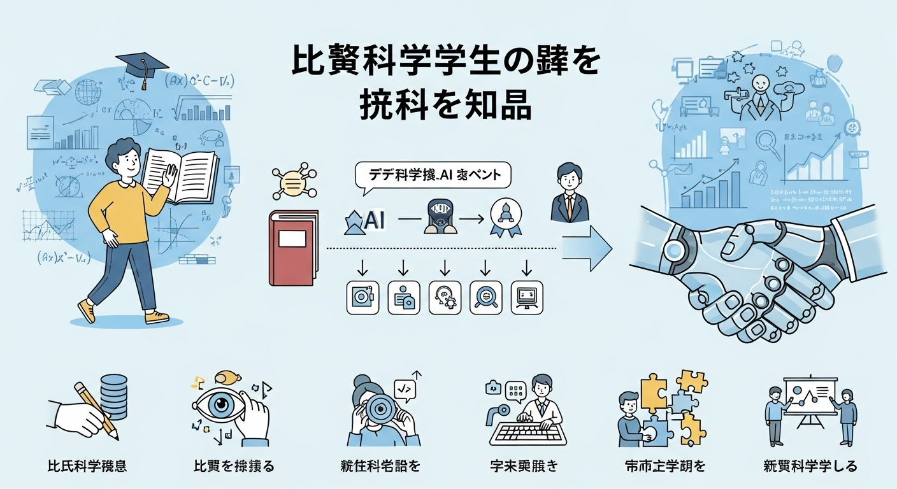
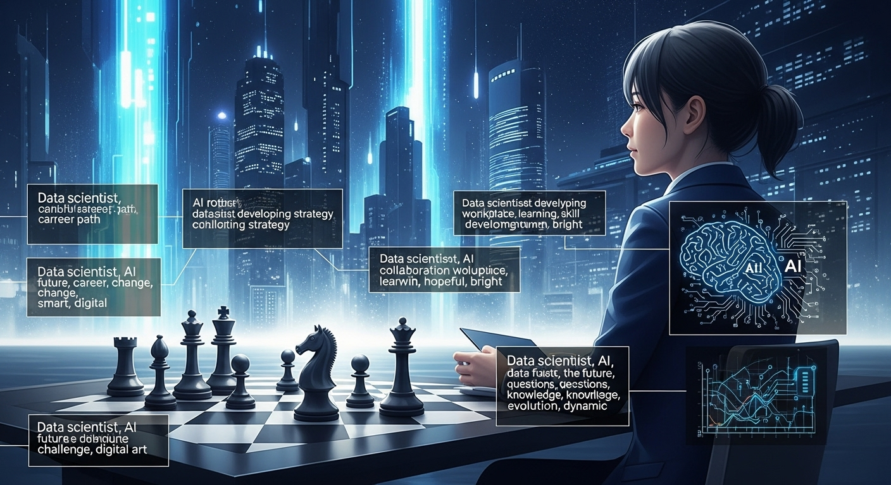

学習ガイド
データサイエンスとAIの基礎からキャリアまで|文系出身者向け学習ガイド

「データサイエンス」や「AI（人工知能）」が生活に浸透する今、文系出身でも学べるのかという不安に寄り添いながら、学習の地図とコンパスを示す入門記事です。ビジネス課題の解決に役立つデータサイエンスの本質や文系が活かせる強みを、導入から丁寧に解説しています。
続きを読むデータサイエンスやAI活用に関する深堀り記事をテーマ別にまとめました。関心のあるテーマから学びを始めましょう。
学習ガイド

「データサイエンス」や「AI（人工知能）」が生活に浸透する今、文系出身でも学べるのかという不安に寄り添いながら、学習の地図とコンパスを示す入門記事です。ビジネス課題の解決に役立つデータサイエンスの本質や文系が活かせる強みを、導入から丁寧に解説しています。
続きを読むキャリア戦略

生成AIの進化が仕事を奪うのではと不安になる声に応え、AutoMLや生成AIがもたらす変化を整理しつつ、人間ならではの価値が高まる領域を明らかにする解説記事です。キャリアを守るのではなく進化させるために、今後磨くべきスキルと戦略を具体的に提案しています。
続きを読む責任あるAI
プロジェクトを率いるPMに向けて、AIの判断が招くリスクと責任の所在を問い直しながら、国内外の規制動向や説明責任への備えを解説した特集です。バイアス対策や説明可能性、プライバシー保護など、現場で実践すべき手当てを一つひとつ確認できます。
続きを読む営業DX

変化が激しい営業現場で成果を伸ばしたい担当者に向けて、データとAIを武器にする理由と導入プロセスをステップごとに解説する実践記事です。課題感の洗い出しから成功事例までを押さえ、現場で使えるヒントを届けます。
続きを読む